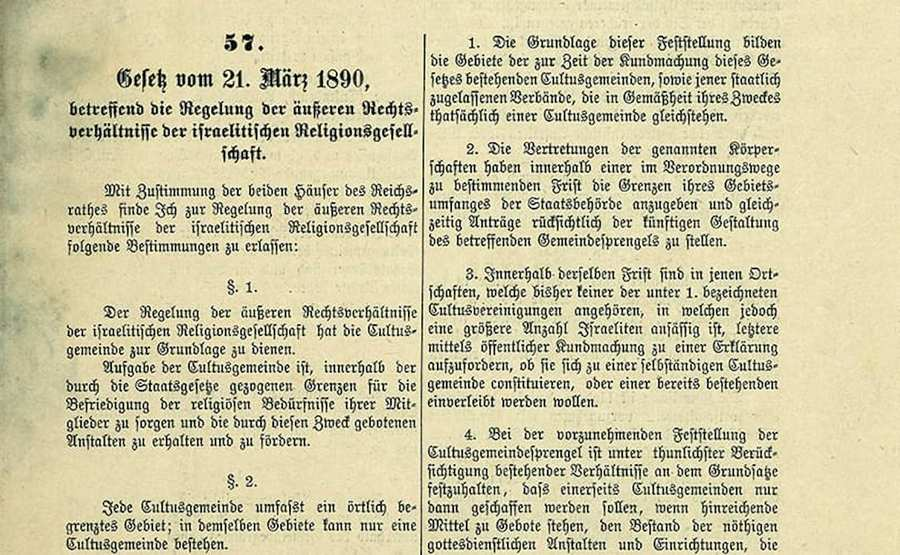

The establishment of an autonomous Jewish religious community was officially sanctioned by Emperor Franz Josef in 1849. This distinction was the first of a series of measures culminating in definitive establishment of the Jewish Community (Israelitischen Kultusgemeinde) vesting the highest diplomatic status in the Jewish Community (Israelitischen Kultusgemeinde) as an official representative serving the Jewish population of Vienna as well as the Jewish community of Austria.
Edict of Tolererance
The Jewish population of the Monarchy was officially subjected to and forced to tolerate many bitter hardships prior to this long-awaited official intercession by the Monarchy. The first great exile 1420/21, the second exile 1670, were an affront to and violation of the Jewish citizens of the Monarchy. Patient in the most extreme circumstances, publicly ostracized and treated with hostility, the Jewish population endured the privation of Vienna and the Monarchy. Under the influence of the enlightenment Emperor Joseph II issued an Edict of Tolerance, that led to the emancipation of the Jews. For the first time, civil rights were extended to the Jewish population and discriminating measures repealed. The formation of a religious community and official worship were not yet officially tolerated.
Isaak Mannheimer, 1858
In 1824, Michael Lazar Biedermann recommended that Rabbi Isak Noa Mannheimer be brought as a preacher to Vienna. Since no Jewish Community officially existed, the rabbi was appointed as “Director of the Official Imperial and Royal Jewish Religious School of Vienna”.
In 1828, the director of the Jewish Community, Isaak Löw Hofmann (after 1835, “Edler von Hofmannsthal”), invited Rabbi Lazar Horowitz, a student of the Chassam Sofer in Pressburg, to serve as Chief Rabbi of Vienna. Because the Jewish Community had no official recognition at that time, the rabbi needed to take the title as “supervisor of ritual” (Ritualienaufseher). He followed strict principles regarding the kashrut and other areas of Halachah, but always tried to balance the various currents within the Jewish Community. He enjoyed great respect and reputation among
Lazar Horowitz
all groups within the Jewish Community of Vienna including the Sephardic Jews. Together with the Preacher Isaac Noa Mannheimer, he participated in the Revolution of 1848 and the campaign for the abolition of the Jewish oath (‘more judaico’). Horowitz was a favorite of Archduchess Maria Dorothea, who had an interest in Hebrew literature and believed in the return of the Jews to the Holy Land. At his request, she arranged the repeal in 1851 the planned eviction of hundreds of Jewish families from Vienna.
On December 12, 1825, the cornerstone of the Vienna Synagogue was set at Seitenstettengasse 4 and, on April 9, 1826, consecrated by Mannheimer. The synagogue was designed according to the plans of the architect Josef Kornhäusel and the prevailing building regulations strictly adhered to in constructing a residential building – a fact which hindered its destruction in November 1938. For the first time since their exile in 1670, the Jewish population of Vienna had triumphed in erecting a spiritual and religious center combining a synagogue, school and ritual bath. In 1826 Salomon Sulzer was appointed to the office of Head Cantor of the Viennese Synagogue, which he served in for 56 years.
The civil war of 1848 encouraged many Jewish intellectuals to engage in the struggle for the emancipation of the Jews within the framework of civil unrest. In the wake of these circumstances, a notable meeting with the young Emperor took place in 1849. Finally, in 1852, the “provisional statutes” of the Vienna community were recognized as official. The community had achieved its lasting autonomy to manage internal and religious concerns. Leopold von Wertheimstein served as the first President (until 1863). Adolf Jelinek followed Mannheimer in 1856 as the second Rabbi to be appointed in Vienna. The LeopoldstŠdter Temple, built according to the plans of Ludwig Förster, was consecrated in 1858.
Wertheimstein, Leopold
In 1867, a constitutional framework pertaining to the Jewish population came to be recognized in Austria for the first time. The Jewish population were granted the rights accorded to all citizens and received full citizenship. The Jewish community grew quite rapidly in the course of these developments: Registration in the Jewish Community of Vienna in 1860 the Jewish population counted 6,200 members, in 1870 there were 40,200 and at the turn of the century 147,000, uncovering their destiny in the imperial capital.
Reforms in the community in 1872 guided by liberal progessive power under the leadership of Ignaz Kurandas gave rise to internal conflict. The orthodox following of Salomon Spitzer wanted to abandon the community. A compromise meliorated the conflict. In the same year a monumental example of Jewish philanthrophy was founded: Rothschild Hospital. 1886 founding of the “Austrian-Jewish Union” by Rabbi Bloch, who targeted on defending Jewish political rights, improving Jewish education and supporting Jewish pride in identity. 1890 “Jewish Law” codification of the relationship between different congregations and the state on a unified legal basis.
Zwi Perez Chajes (1927)
1918 Zwi Perez Chajes, a representative of national Judaism, became Chief Rabbi. His secular education reinforced ties to East-European Jewry. Chajes is also Founder of the first Jewish Gymnasium and the Jewish Pedagogium in Vienna. In honor of his achievements the Jewish Gymnasium, which carries his name, reopened in 1984.
After a century of efforts for Jewish emancipation, anti-Semitic riots stoked by Christian Socialist, German Nationalist and National Socialist parties accumulated during the years between the two World Wars. Religiously motivated hatred of Jews was now accompanied by racial anti-Semitism, which culminated in a first wave of persecution already in the first days after the so-called “Anschluss” in March 1938. Jews were harassed, driven through Vienna, their apartments and offices depredated.
These riots reached their peak in the night of November 9 to November 10, 1938: Conducted as an outbreak of spontaneous public rage against Jews by the National Socialists, Viennese synagogues were defiled and destroyed in this night – only the central synagogue, though ravaged, was not set on fire because of its integration into a complex of buildings. In this night, numerous Jewish
City Temple, Nov. 1938
stores were pillaged; many Jews were apprehended and, with few exceptions transported to the Dachau concentration camp during the following days.
The Nuremberg Laws, also effective in occupied Austria since May 1938, were heightened by innumerable anti-Semitic regulations. Step by step, these led to the total deprivation of the rights of freedom and personal property, the exclusion from nearly all professions, the expulsion from schools and universities and subsequently to visible discrimination by the mandatory bearing of a badge in the shape of a yellow star.
The Jewish organizations and institutions were coercively disbanded, deprived of their assets. With the establishment of the National Socialist “Zentralstelle für jüdische Auswanderung” (“centre for Jewish emigration”) in the summer of 1938, the forced mass-emigration was put into an organizational framework. While leaving their entire immovable and movable property behind, more than 130.000 Jews succeeded to escape by the end of October 1941, in many cases provided with the financial aid of international Jewish organizations and the organizational assistance of the Jewish community. Yet about 16.000 of them were again caught and deported later on by their persecutors in other European countries. At the Wannsee Conference, held in January 1942, the main features of the organization and coordination of the already pre-determined total extinction of European Jewry were assigned. Upon conclusion of the mass-deportations from Vienna by October 1942, the National Socialist potentates had already transported more than 47.000 Jews to ghettos, extermination camps and other sites of extermination; until 1945 further deportations followed. Altogether more than 65.500 Jews from Austria were eliminated in the Shoah. In Austria only approximately 5.500 Jews survived, most of them due to so-called “Mischehen” (intermarriages).
After World War II, a considerable time span was needed for Austria to take over responsibility. Nearly noone found it worth the effort, to invite the ‘emigrees’ to return to their homeland. Only in the 1980s people began to rethink and reflect upon the public opinion. In July 1991 the Austrian government composed a statement, communicated by Bundeskanzler Vranitzky to the Austrian Parliament acknowledging Austria’s participation in the crimes of the Third Reich.
Under these difficult external pressures, it is not easy for the Jewish community to rebuild a new religious life. The majority of exiled Jews refused to return to their homeland after the war and the Vienna Jewish community remained small. In 1938 it had more than 185,000 Members, at the end of 1990s 7,000 registered were in the Community. Many former refugees have found asylum in Vienna in the last decades and have begun a new life.
Ariel Muzicant, IKG President 1998 – 2012
Visible signs of life by the small but very vibrant Jewish community radiate from the Jewish synagogue, reopened in 1963 after extensive renovation, the 1972 “Sanatorium Maimonides-Zentrum” in Bauernfeldgasse, the “Zwi-Perez-Chajes-Schule” reopened in 1984, in 1986 the Ronald S. Lauder-Foundation established the “Beth-Chabad-Schule” and various other educational institutions mainly developed in the last decades.
Two years ago a new Jewish center opened on the Tempelgasse, until 1938 the site of the Leopoldstädter Temple, housing many facilities including the psycho-social center ESRA.
500 years after the original founding, roughly 60 years after its demise, a Sefardic Community reestablished itself in May 1992 in Vienna`s second district featuring a synagogue and a room used for celebrations.
In 1863 Leopold von Wertheimstein, the first President of the Jewish community, and in recent years presidents Dr. Ivan Hacker, Paul Grosz and Dr. Ariel Muzicant have shaped the development of the community known as IKG. Between 1982 and 1998, Dr. Hacker and President Grosz represented the fate of the Vienna Jewish population. They have made strides against intolerance and antisemitic sentiments and in support of improved relations with the non-Jewish public and religious organizations.
Oskar Deutsch, IKG President since 2012
Their successor, Dr. Ariel Muzicant, was the first president of the IKG, who was born after the Holocaust and World War II. He stand for the continuation of the course of his predecessors. Among his most recent and notable achievements, he provided the impetus for the establishment of a historical commission. 2012 followed the long-time Vice-President, Oskar Deutsch as president. He was re-elected in 2017.